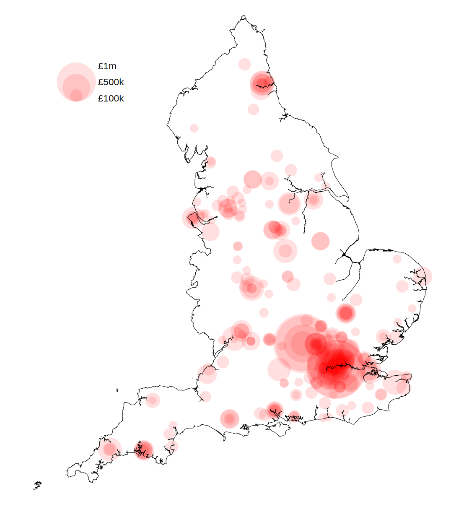
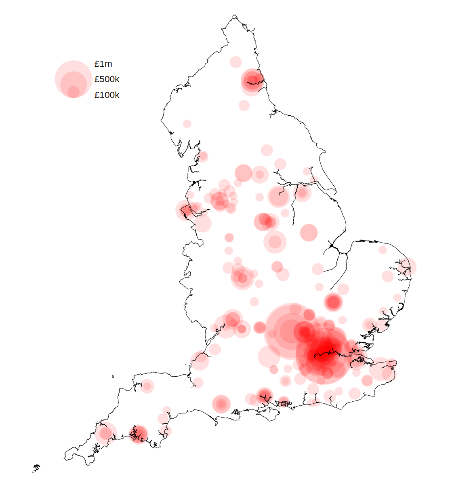

About the data
Most of the data on the platform is available under the Open Government Licence, meaning anyone can view, build services using the data or download and analyse the data to inform planning and other decisions. Attribution and licensing terms are documented against each dataset.
This product is still in development, so the data may be incomplete and does not yet cover all of England.
Resources and support
Documentation
- API: learn how to access our data through an API
- Datasets: see all available planning datasets
- Dataset specifications: understand the schema and structure of each dataset
- Team handbook (work in progress): get insights into how we work and build the platform
Code
Explore our repositories to understand how the platform works, integrate with our tools, or contribute directly.
The code behind the Planning Data platform is available as open source. The team work in the open at github.com/digital-planning and welcome contributions:
- digital-land.info: the planning.data.gov.uk application
- specification: where we manage our specifications
- config: where we configure our data sources and data pipeline
- digital-land-python: our data pipeline which collects from planning authorities and transforms it into our datasets
- check and provide data: the application where we give feedback to planning authorities providing data
- design: how we discover and co-design datasets for the platform
Local plans
Local plans set out the vision and framework for future development. Accessing this data can help you understand future housing targets and development strategies across different regions.
We are in the process of developing a specification for LPAs to provide data about their local plan, with some data on the platform:
Tools and examples
This section highlights existing tools and projects that utilise planning data, offering inspiration and practical examples for your own work.
- backups of the considerations Postgres database: underpins various planning analyses
- planning applications submissions: learn about the group defining standards for planning application data
- land calculator: a tool to estimate land capacity
- Barnet conservation areas: see a real-world application of the data in local conservation efforts
- Digital Planning project: includes an example of how to use planning data to create a SVG choropleth map
 Caption: A screenshot from land calculator

Caption: A proportional symbol map showing the scale of the digital programme funding in different LPA areas in England.
Caption: A screenshot from land calculator

Caption: A proportional symbol map showing the scale of the digital programme funding in different LPA areas in England.
Where we get our data from
Local Planning Authorities
Local planning authorities (LPA) are the primary decision-makers in the planning system, and their consistent data is foundational to the platform.
In England, a local planning authority is an organisation responsible for planning within an area. Organisations who act as the LPA include some, but not all local authorities, National Park Authorities and Development Corporations.
Selecting and filtering role-organisations with the role local-planning-authority and a blank end-date the current list of
active local planning authorities.
Organisations
Organisations are important as they are the source and context for much of the planning data.
Our data includes ONS / GSS codes (nine-character codes maintained by the UK's Office for National Statistics (ONS) to represent various geographical areas of the UK) for the local authority district, national park area, local planning authority boundary, and other geographies. Along with Wikipedia, Wikidata is useful when reconciling data from different sources.
ONS / GSS codes help you link planning data to broader geographical and statistical information for richer analysis.
Contribute to the Planning Data Platform
We work in the open, and welcome your feedback and contributions. You can help:
- identify missing data, and inform the design of the datasets we put on the platform by participating in the data design process
- prioritise our work by commenting on our project backlogs
- improve this guidance through by making a pull-request to the quickstart repository or participating in the quickstart GitHub discussion